プロデルデザイナ
プロデルのプログラムは、メモ帳やVisual Studio Codeなど一般的なテキストエディタで作成できます。
プロデル専用の開発環境である「プロデルデザイナ」を使うと、プロデルのプログラムを作るために便利な次の機能が使えます。
- プロデルのプログラムを作成、編集する機能
- ウィンドウのデザイン機能
- 作成したプログラムを実行、テストする機能
- 実行可能ファイルへの出力機能
プロデルデザイナの起動方法
セットアッププログラムを利用してインストールした場合は「スタート」メニューから「プロデル」→「プロデルデザイナ」をクリックします。
Zip形式を解凍した場合は、解凍したフォルダにある「Designer.exe」を起動します。
プロデルデザイナを起動すると、次のような画面が表示されます。
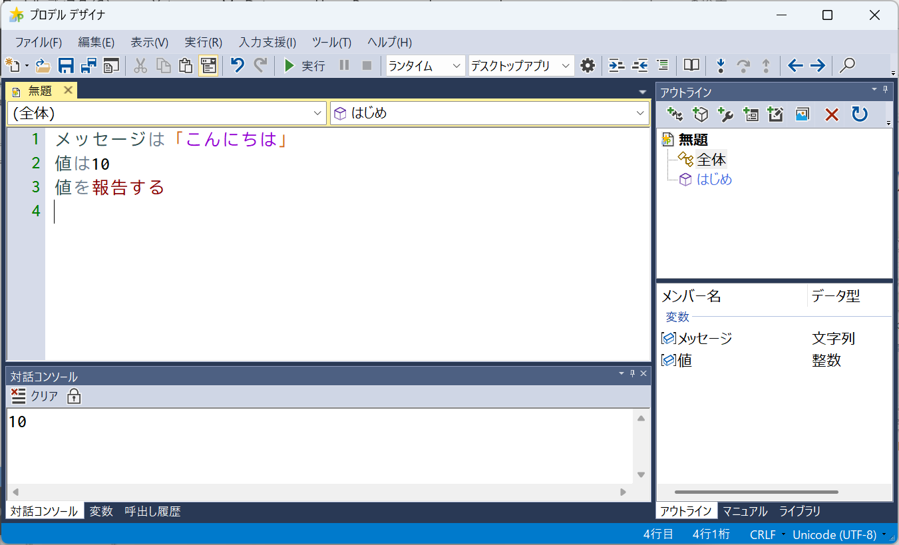
プロデルデザイナの基本操作
- 中央のファイルタブにプログラムファイルを開いてプログラムを入力します。新規で作成する場合には「ファイル」メニューの「新規作成」から作成して開きます。
- 作成したプログラムを保存するには「ファイル」メニューから「上書き保存」を選択します。
- ウィンドウを作成するには「アウトライン」タブで新しいウィンドウを作成します。
- 同じ内容を複製するには「編集」メニューの「コピー」と「貼り付け」を使います。操作を取り消したい場合には「編集」メニューの「元に戻す」を使います。
- プログラムを実行するには[実行]ボタンをクリックします。
画面の説明
プロデルデザイナは、主に画面上部のメニューバーとツールバー、画面中央のファイルタブ領域、右側の機能タブ領域、画面下部の調査タブ領域があります。
プロデルデザイナは、ドッキングレイアウトとなっており、タブをドラッグすることで各領域の配置を好みに合わせて移動できます。
ツールバー
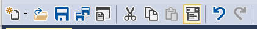 |
||
|---|---|---|
| 1 | 新規作成 | プロデルファイルやプロジェクトを新規作成します。「テンプレートから」ではひな形を選択してプロデルプログラムを作成できます。 |
| 2 | 開く | 保存されているファイルを開きます。 |
| 3 | 上書き保存 | 現在ファイルタブで開いているファイルを上書き保存します。新規ファイルではファイル保存ダイアログで保存場所を指定します。 |
| 4 | すべて保存 | ファイルタブで開いているすべてのファイルに対して上書き保存します。 |
| 5 | 実行可能ファイルの作成 | ダイアログで指定した場所に実行可能ファイルを作成します。 |
| 6 | 切り取り | 現在開いているタブで選択中の内容をクリップボードへコピーしてから削除します。 |
| 7 | コピー | 現在開いているタブで選択中の内容をクリップボードへコピーします。 |
| 8 | 貼り付け | 現在開いているタブでクリップボードにある内容を貼り付けします。 |
| 9 | 入力補完機能の有効化 | 入力補完機能を有効状態にします。入力補完機能が不要な場合は、チェック状態を解除します。 |
| 10 | 元に戻す | 操作した内容をひとつ前の状態に戻します。 |
| 11 | やり直し | 元に戻した操作をひとつ取り消します。 |
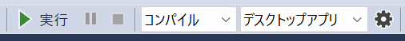 |
||
| 1 | 実行 | プログラムを実行します。 |
| 2 | 一時停止 | 実行しているプログラムを一時停止します。 |
| 3 | 停止 | 実行しているプログラムを停止します。 |
| 4 | 実行環境 | 実行環境を選択します。コンパイルを選択するとコンパイルしてから実行します。 |
| 5 | アプリ種類 | 実行するプログラムの種類を選択します。「コンソールアプリ」を選択するとターミナルが起動します。 |
| 6 | プログラムの詳細設定 | 実行するプログラムの実行方法を設定します。 |
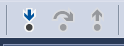 |
||
| 1 | ステップイン | 次の文を実行します。手順の場合は、その手順のプログラムの最初の文へ移動します。 |
| 2 | ステップオーバー | 次の文を実行します。 |
| 3 | ステップアウト | 実行中の手順のプログラムをすべて実行し、呼び出し元のプログラムの次の文へ移動します。 |
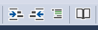 |
||
| 1 | 段落を上げる | 選択中の内容について行全体のインデントを増やします。 |
| 2 | 段落を下げる | 選択中の内容について行全体のインデントを減らします。 |
| 3 | コメントの設定/解除 | 選択中のプログラムにコメントを設定します。または解除します。 |
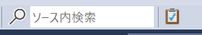 |
||
| 1 | ファイル内検索 | ファイル内またはプロジェクト内のプログラムから文字列を検索します。また見つかった文字列を置換します。 |
| 2 | ソース内検索 | 入力したキーワードを現在開いているタブの内容から探して黄色で強調します(インクリメント検索)。 |
| 3 | テストツール (アドイン領域) |
単体テストツール(RdrUnit)を起動します。 |
ファイルタブ領域
画面中央の領域には、開いているファイルなどの内容が表示されます。ファイルなどを開くとタブが増えて、タブを切り替えるとその内容を編集したり操作したりできます。[×]アイコンでタブが閉じられます。
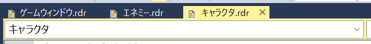
プログラムの編集
プログラムは、中央のテキストボックスに入力します。
文字のコピーや貼り付けなどの操作は「編集」メニューから操作できます。プログラムで頻繁に使われる記号は「入力補助」メニューから入力できます。
テキスト領域で使用するフォントの設定は「ツール」メニューの「オプション」で変更できます。
主な機能
カーソル移動履歴
編集中のカーソルを置いた場所は、プロデルデザイナが記憶しており、必要に応じて前に操作したカーソル位置へ戻られます。
定義へ移動
プログラム中の種類や手順、変数が定義されている箇所へ移動できます。定義を確認したい箇所にマウスカーソルを置き、右クリックして「定義へ移動」を選択して下さい。
名前の変更
カーソルがある位置の識別子(変数や種類、手順の名前)をプログラム中から一括で変更できます。
コンテキストメニュー
プログラム領域を右クリックすると、コンテキストメニューが表示されます。
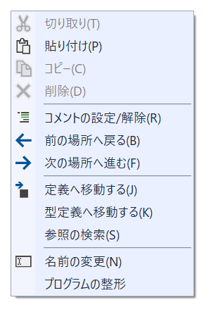 |
||
|---|---|---|
| 1 | 切り取り | 選択中の部分をクリップボードへコピーしてから削除します。(Ctrl+X) |
| 2 | 貼り付け | クリップボードの内容をカーソルがある位置に入力します。(Ctrl+V) |
| 3 | コピー | 選択中の部分をクリップボードへコピーします。(Ctrl+C) |
| 4 | 削除 | 選択中の部分を削除します。(Deleteキーと同じ) |
| 5 | コメントの設定/解除 | 選択中のプログラムに一括でコメントを設定します。または解除します。 |
| 6 | 前の場所へ戻る | 選択していた一つ前の行数・桁数へカーソルを移動します。 |
| 7 | 次の場所へ進む | 選択していた一つ先の行数・桁数へカーソルを移動します。 |
| 8 | 定義へ移動する | カーソルがある識別子を定義をしている種類や手順へ移動します。 |
| 9 | 型定義へ移動する | カーソルがある識別子のデータ型の定義をしている種類や利用するライブラリへ移動します。 |
| 10 | 参照の検索 | カーソルがある識別子が使われているプログラム中の場所を検索します。 |
| 11 | 名前の変更 | カーソルがある識別子(変数など)の名前を一括で変更します。 |
| 12 | プロクラムの整形 | 開いているプログラムのインデントを自動的に整えます。 |
候補から選択して入力する
プロデルデザイナには「入力補完機能」があり、入力中の字句に合致している種類や手順、設定項目を候補から絞り込んで列挙する機能があります。列挙された候補から入力したい項目を選ぶと、その項目が自動的にプログラムに入力されます。
入力補完機能は、文字を入力中に表示されるほか、 [Ctrl]+[スペース]キーを押すことでも、入力候補の一覧が表示されます。
入力補完機能の使い方
- 入力したい字句の書き出し（ひらがなや漢字）で入力します
- [Ctrl]+[スペース]キーを押します
- 手順や設定項目、変数などの一覧が表示されるので[↓][↑]で選び、[エンター]キーを押します
- 選択した内容が入力されます
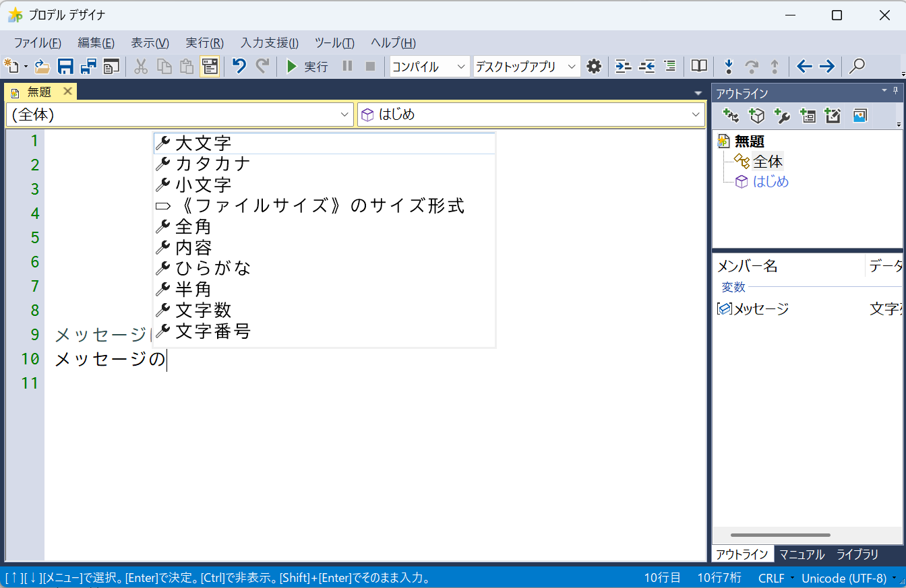
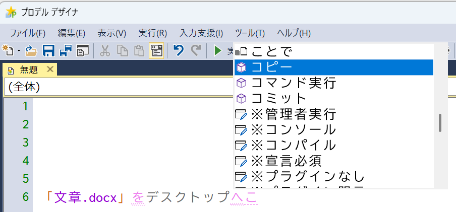
補完後の穴埋め
入力補完後に選択した項目によっては、穴埋めするための《 》が表示されます。入力補完直後は、最初の穴埋め部分が選択されます。 穴埋め箇所は、[Ctrl] + [←]または[Ctrl] + [→]を押すことで、移動できます。
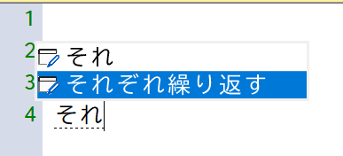
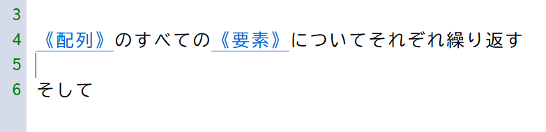
入力候補を非表示にする
入力している文字の邪魔になる場合などは[Ctrl]キーまたはで候補一覧を消せます。常に表示したくない場合は、ツールバーの「入力候補」ボタンのチェックを解除してください。
候補の提示タイミングを変更する
プログラムを入力中に、補完機能が候補を表示するタイミングを変更できます。既定の設定では、漢字確定前(IMEの未確定の状態)に候補一覧が表示されます。詳しい説明は「オプション設定」の「入力補完」をご覧ください。
候補が正しく提示されないときは
入力候補は、直前に入力・選択した候補などの状態によって、フィルタリングされることがあります。提示される候補が思った内容と異なるときや、候補が少ないときは、[Escape]キーを押すことで、初期状態に戻せます。
ウィンドウの設計
「ウィンドウの設計」画面を使って、プログラム上で表示するウィンドウをデザインできます。マウス操作で、ボタンやテキストボックスなど貼り付け、移動したりできます。
新規ウィンドウを作成する
右側のアウトラインの上部にあるツールバーから「新しいウィンドウ」ボタンをクリックします。ウィンドウ名を入力すると、アウトラインにウィンドウが追加されます。追加されたウィンドウ項目を、ダブルクリックすると「ウィンドウの設計」画面に切り替わります。
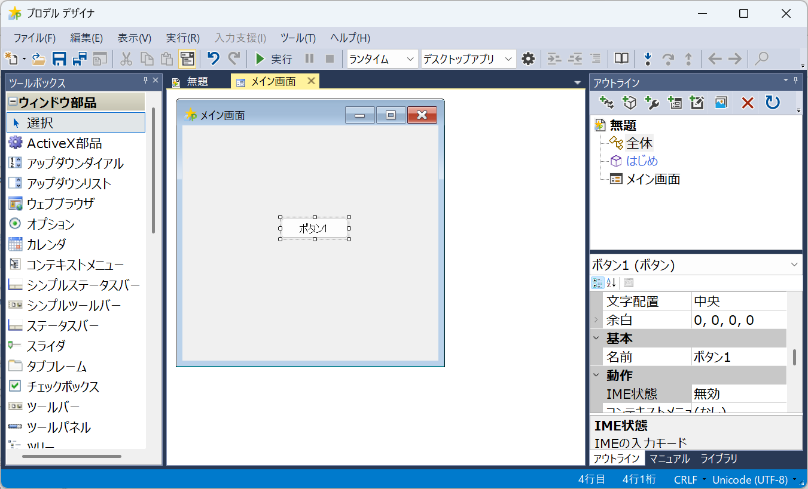
部品を貼り付ける
ウィンドウ上に貼り付ける部品は「ウィンドウの設計」の左側にあるツールボックスから選択できます。
部品を貼り付けるには、次のように操作します。
- ツールボックスから部品を選択します。
- ウィンドウ上で部品の左上の位置からドラッグして大きさを決めます。
- マウスボタンを離すと、その大きさに部品が貼り付けられます。
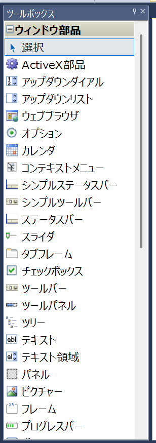
部品の設定を変える
部品の名前や色などの設定項目を変更するには「アウトライン」タブの「設定項目一覧」部品で設定します。
ウィンドウ上の部品を選択した状態で、設定項目一覧から変更したい設定項目を選び、内容を変更します。設定項目によっては、選択肢から選択したり色の選択画面で選択されたりします。
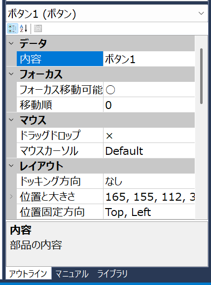
プログラムを出力する
「ウィンドウの設計」で設計したウィンドウは、プログラムとして出力されます。ウィンドウの設計画面のタブを閉じたり、プログラムのタブに切り替えると、プログラムを出力されます。
ウィンドウ一つに対して、一つの種類が生成され、必要なプログラムが「初期化する」の手順に自動的に出力されます。
出力された「初期化する」手順のプログラムは書き換えないでください。ウィンドウの設計で再び開けなくなったり、ウィンドウ設計に関係しない加筆したプログラムが消えてしまったりなどの意図しない挙動となります。
ウィンドウを再編集する
ウィンドウを再編集するには、アウトラインタブから、 対象のウィンドウを選び、右クリックして「設計画面を開く」を選びます。または項目をダブルクリックします。
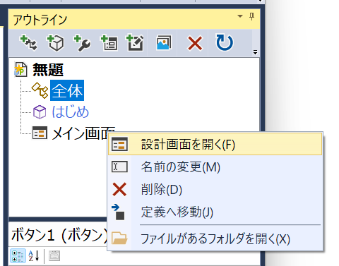
イベント手順を作る
貼り付けた部品の各イベント手順を定義できます。
１．部品を選択して、右クリックしてコンテキストメニューから「イベント手順の設定」を選びます。
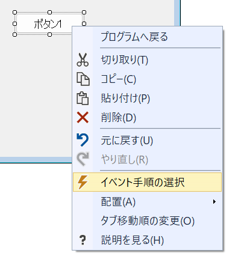
２．作成するイベント手順を選び、[OK]ボタンをクリックします。
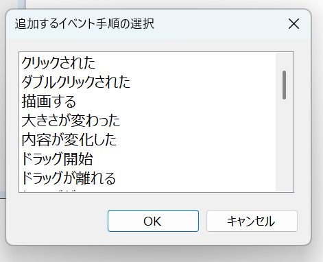
３．選択したイベント手順が作成されます。
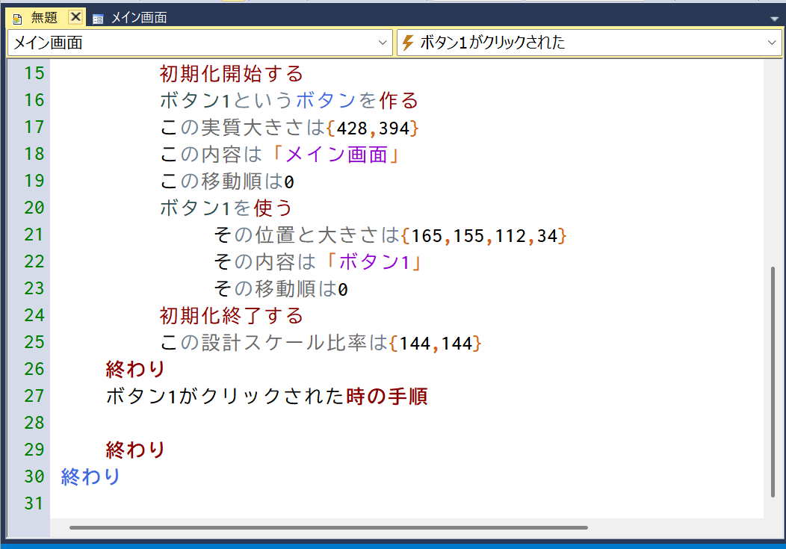
機能タブ領域
プロデルデザイナの画面右側には、機能タブ領域があります。機能タブ領域では、プログラムの編集に関する操作ができます。次の3つのタブがあります。
| アウトライン | アウトラインタブには、開いているプログラムで定義した情報を見られます。 プログラムに含まれる手順や種類、ウィンドウの一覧がツリーで表示されます。ツリーの定義を選択すると、下部のリストビューに変数や手順、設定項目、イベントの各定義が列挙されます。 リストビューの項目をダブルクリックしたりドラッグしたりすると、プログラム領域に選択した項目の名称が入力されます。またコンテキストメニューから定義へ移動したりマニュアルの説明を閲覧できます。 |
|---|---|
| マニュアル | マニュアルの内容を参照できます。 ツールバーから、ファイルタブのWebブラウザに切り替えたり、既定のWebブラウザで該当ページを開き直すこともできます。 [ジャンプ]ボタンでプロデルの主要コンテンツを閲覧できます。 |
| ライブラリ | プロデルの標準ライブラリやプラグインに定義された種類をツリーで確認できます。ツリーのノードを展開すると、手順や設定項目が確認できます。 |
「アウトライン」タブ
「アウトライン」タブには、開いているプロデルプログラムの構造が表示されます。プロジェクトモードの時は、プロジェクトに登録されたファイルがすべて列挙されます。
ウィンドウや種類、その手順や設定項目もアウトラインから定義することもできます。また、要素の名前を変えることもできます。
アウトラインのツリーとプログラムは、連動しています。例えば、「ウィンドウの設計」画面で設計したウィンドウに対応するプログラムを削除するとツリーからも削除され「ウィンドウの設計」画面も閉じられます。
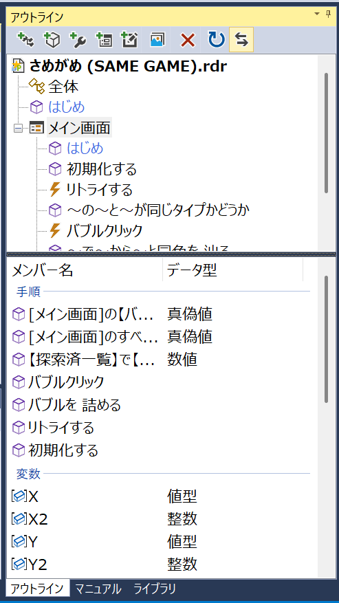
アウトラインのツールバー
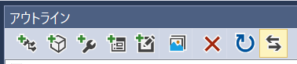 |
||
|---|---|---|
| 1 | 種類の作成 | 新しい種類を定義します。名前を入力すると対応するプログラムが作成されます。 |
| 2 | 手順の作成 | 選択中の種類内に、新しい手順を作成します。名前を入力すると対応するプログラムが作成されます。 |
| 3 | 設定項目の作成 | 選択中の種類内に、新しい設定項目を作成します。名前を入力すると対応するプログラムが作成されます。 |
| 4 | ウィンドウの作成 | 新しいウィンドウを作成します。名前を入力すると「ウィンドウの設計」画面に切り替わります。 |
| 5 | カスタムウィンドウ部品の作成 | 新しいカスタムウィンドウ部品を作成します。名前を入力すると「ウィンドウの設計」画面に切り替わります。 |
| 6 | 素材の追加 | プログラムで使用する素材リストにファイル素材を追加します。素材リストに登録するファイルを選択します。 |
| 7 | 削除 | 選択している要素を削除します。プログラムの該当する箇所も削除されます。 |
| 8 | 更新 | 開いているプログラムの定義に合わせてアウトラインツリーの内容を反映します。 |
| 9 | 選択同期 | チェックすると、開いているファイルのカーソルがある行の定義に該当するツリーの項目が自動選択されます。 |
「ライブラリ」タブ
「ライブラリ」タブには、標準ライブラリとプラグインで利用できる種類の一覧がツリーで列挙されています。種類項目を選択すると、下部のリストビューに手順、設定項目、イベントの名前やシグネチャが列挙されます。
ペイン上部のテキストボックスにキーワードを入力して[Enter]を押すと、ツリーからキーワードに関連する項目のみに絞り込まれます。
調べたい項目のコンテキストメニューからマニュアルの説明を閲覧できます。
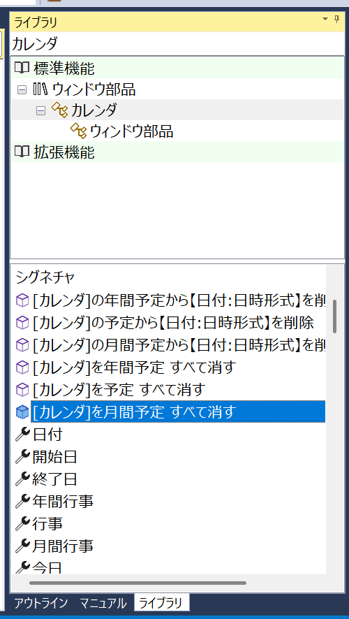
調査タブ領域
調査タブ領域では、各調査ウィンドウで実行中のプログラムの変数の値や呼び出された手順などの情報を確認できます。調査ウィンドウには「対話コンソール」,「変数」,「呼出し履歴」の3つのタブがあります。調査ウィンドウは「表示」メニュー→「調査ウィンドウ」メニューから開きます。
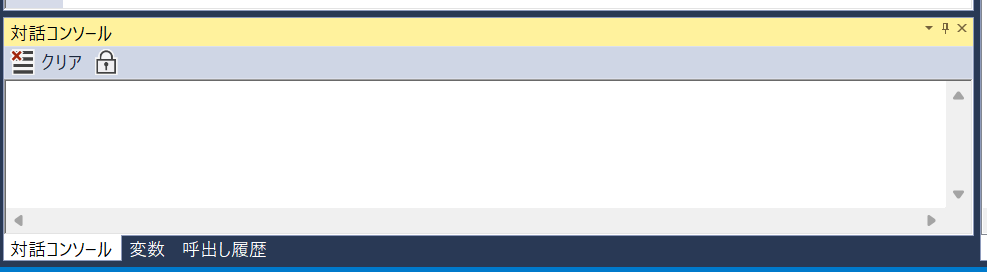
「対話コンソール」タブ
実行中のプログラムで「報告する」手順を呼び出した時に報告される内容が表示されます。式を入力することで、その式を評価してその結果を表示させることもできます。
「変数」タブ
実行中のプログラムで使用される変数とその値を確認できる画面です。上部に表示された変数一覧から変数を選択すると、右側に値の内容が表示されます。
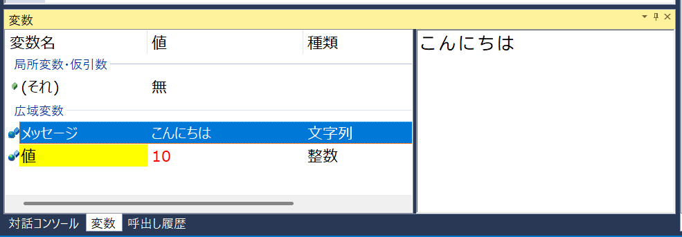
変数を選択すると、右側に変数の値が表示されます。値が配列や辞書の場合は、要素の一覧がリストで列挙されます。種類オブジェクトの場合は、設定項目や種類変数の値をツリーで確認きます。
変数一覧のアイコンが「＋」の場合、公開変数を表し、 「－」の場合、手順・種類内限定のローカル変数を表します。
「呼出し履歴」タブ
実行中のプログラムで現時点で、実行されている手順と、呼び出し元の手順が一覧で表示されます。一覧をダブルクリックすると、該当部分のプログラムへ移動します。
プロジェクトモード
プロジェクトモードでは、複数のプロデルファイルをひとつのプロジェクトとして扱えます。複数のプロデルファイルにまたがるプログラムを作成する場合には、 プロジェクトモードを使うと便利です。同じプロジェクトの他のプロデルファイルが参照されて別のファイルの定義を使えます。
プロジェクトの作成
プロジェクトを作成するには「ファイル」メニューから「新規作成」→「プロジェクト」を選びます。
保存先とプロジェクトファイル名を入力して[保存]ボタンをクリックします。
プロジェクトを作成すると、プロジェクトモードになります。
プロジェクトへファイルの追加
プロジェクトにファイルを追加するには、右側のアウトラインで右クリックして 「プロジェクト」から「新規ファイルを追加」または「既存ファイルから追加」を選びます。
プロジェクトモードでは、ファイルのタブを閉じても、アウトラインから再びファイルを開けます。
最初に実行するプログラムの指定
プロジェクトモードでは「実行」ボタンをクリックした際に、最初に実行するプロデルファイルを指定します。最初に実行するプログラムを指定するには、右側のアウトラインを使います。
設定方法
- アウトラインから指定したいプロデルファイルを選択して、右クリックします。
- メニューの「最初に実行する」をクリックします。
- アウトラインの指定したプロデルファイルに下線が表示されます。
- この状態で「実行」ボタンまたは「実行」メニューを操作すると、下線があるプロデルファイルが実行されます。
プロジェクトの詳細設定
「ファイル」メニューの「プロジェクトの詳細設定」では、プロジェクトのプログラムの実行方法を指定できます。
プログラムの実行方法の設定
プロジェクトモードのプログラムの実行方法を選択できます。「プロジェクトの詳細設定」の「プログラム実行」タブを開きます。
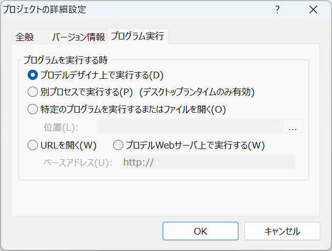
| プロデルデザイナ上で実行する | プロデルデザイナ上でプログラムを実行します。変数情報を確認したり、停止行を設定したりできる実行方法です。 |
|---|---|
| コンソール上で実行する | コマンドプロンプト画面上でプログラムを実行します。変数情報の確認や停止行の設定はできません。 |
| 別プロセスで実行する | エクスプローラで直接プロデルファイルを開いた場合と同様に、 プロデルデザイナとは別のプロセスで実行します。変数情報の確認や停止行の設定はできません。 |
| 特定のプログラムを実行するまたはファイルを開く | プログラムを実行する操作をした際に、指定したプログラムを起動したり、指定したファイルを開いたりします。 この方法を選んだ場合は「位置」でプログラムまたはファイルを指定する必要があります。変数情報の確認や停止行の設定はできません。 |
| Webサーバ上で実行する | プログラムを実行する操作をした際に、指定したURLを開きます。 プロデル簡易Webサーバを使用した場合に利用します。 変数情報の確認や停止行の設定はできません。 |
実行可能ファイルを作成する
作成したプロデルのプログラムから、 プロデルがインストールされていない環境でも実行できる形式(実行可能ファイル)を 作成できます。
作成する方法
1.「ファイル」メニューから「実行可能ファイルの作成」を選びます。 または、ツールバーから「実行可能ファイルの作成」ボタンをクリックします。
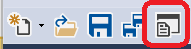
2.実行可能ファイルのファイル名を指定して[保存]をクリックします。
実行可能ファイルの種類
「実行可能ファイルの作成」では、次の形式で作成できます。
| デスクトップアプリ (ランタイム環境) | GUIによるデスクトップアプリケーション。ランタイム環境で実行します。 |
|---|---|
| コンソールアプリ (ランタイム環境) | CUIによるターミナル(コマンドプロンプト)上で実行するコンソールアプリ。ランタイム環境で実行します。 |
| プラグインDLL (ランタイム環境) | 他のプログラムから利用できるプロデルプラグイン。プログラムで宣言された種類を他のプログラムから呼び出せます。 |
| コンパイル済み デスクトップアプリ | コンパイル済みのデスクトップアプリケーション。生成時に中間コード(MSIL)にコンパイルされます。 |
| コンパイル済み コンソールアプリ | コンパイル済みのコンソールアプリケーション。生成時に中間コード(MSIL)にコンパイルされます。 |
| コンパイル済み プラグインDLL | コンパイル済みのプロデルプラグイン。プログラムで宣言された種類を他のプログラムから呼び出せます。 |
ランタイム環境の実行可能ファイルとは
プログラムとプロデルランタイム、必要なプラグインを同梱した実行可能ファイルを生成します。プロデルデザイナ上で実行した場合と同じ挙動・速度で実行されます。
コンパイル済みの実行可能ファイルとは
プログラムを中間言語(MSIL)にコンパイルした実行可能ファイルを生成します。コンパイルすると、ランタイム環境の実行可能ファイルに比べて処理の速度が高速になります。ランタイム環境とは基本動作には違いはありません。
プロデルプラグインのDLLファイルとは
他のプロデルプログラムから「利用する」文を使って種類を利用できるファイル形式です。他のプログラムから特定の種類を呼び出して使います。C#など.NETに対応した言語からも参照できます。
プロデルデザイナで作成した実行可能ファイルは、プロデルがインストールされていない環境でも実行できます。実行環境にはWindows環境に予め組み込まれている.NET Framework 4.8を利用します。
アイコンを指定する
実行可能ファイルには、独自のアイコンを指定できます。対応しているアイコン形式は、アルファチャネルやVista形式を含め、基本的な形式に対応しています。
なお、アイコンを作成するには、Visual Studioやアイコン作成・変換フリーソフトを利用して下さい。
単一のプロデルファイルの場合
実行可能ファイルに独自のアイコンを指定する場合は、作成したプロデルのプログラムのファイル名と同じフォルダに同じ名前のアイコンを置いてください。
例えば、実行可能ファイルを作成したいプロデルファイルが「アプリ.rdr」の場合、 独自アイコンは、同じフォルダに「アプリ.ico」というファイル名前で置きます。
プロジェクトモードの場合
プロジェクトモードの場合は「プロジェクトの詳細設定」画面で設定できます。
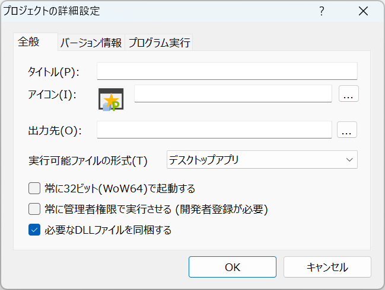
実行可能ファイルのアイコンは、上書きした場合などに、エクスプローラ上ではすぐに反映されないことがあります。その場合「最新の情報に更新」で更新してください。またはファイルのプロパティでアイコンを確認してください。
バージョン情報を指定する方法
「プロジェクトの詳細設定」/「プログラムの詳細設定」画面では、実行可能ファイルに、プログラムの概要やバージョン、詳細な著作権情報を指定できます。
詳細なバージョン情報を指定するには、プロジェクトモードである必要があります。
設定方法
1.プロジェクトファイルを開いた状態で「ファイル」メニューから「プロジェクトの詳細設定」を選択します。
2.「プロジェクトの詳細設定」画面の「バージョン情報」タブで「詳細情報」のリストから編集したい項目を選び、 内容を右側のテキストボックスへ入力します。
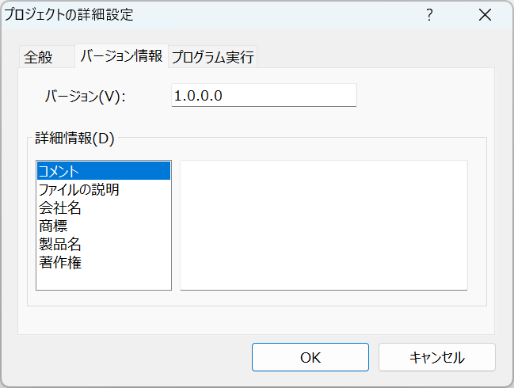
3.[OK]ボタンをクリックした後「ファイル」メニューの「実行可能ファイルの作成」で、 実行可能ファイルを作成します。バージョン情報が含まれた実行可能ファイルが作成されます。
素材ファイルの同梱
画像ファイルや効果音などプログラム中で使用する外部ファイルを、素材として実行可能ファイルの作成時に同梱できます。「素材として利用する」文に指定されたファイルが実行可能ファイルに埋め込まれます。
例えば「タイトル.png」というファイルを実行可能ファイルに埋め込むには、次のように書きます。
//同じフォルダにあるタイトル.pngを実行可能ファイルに埋め込む 「タイトル.png」を素材として利用する
素材として利用するファイルは「素材リスト」種類を使ってプログラム中で利用できます。また、素材は、アウトラインから追加・削除することもできます。
プラグインの同梱
プログラム中でプラグインの機能を利用している場合は、通常、実行可能ファイルの作成時にプラグインが同梱されます。
既定値では、プログラム中で使用している種類が含まれるプラグインを同梱しますが、オプションによってこれらのプラグインを同梱しないように設定できます。
オプション画面
「オプション」画面では、プロデルデザイナの設定やプロデルの動作設定を変更できます。
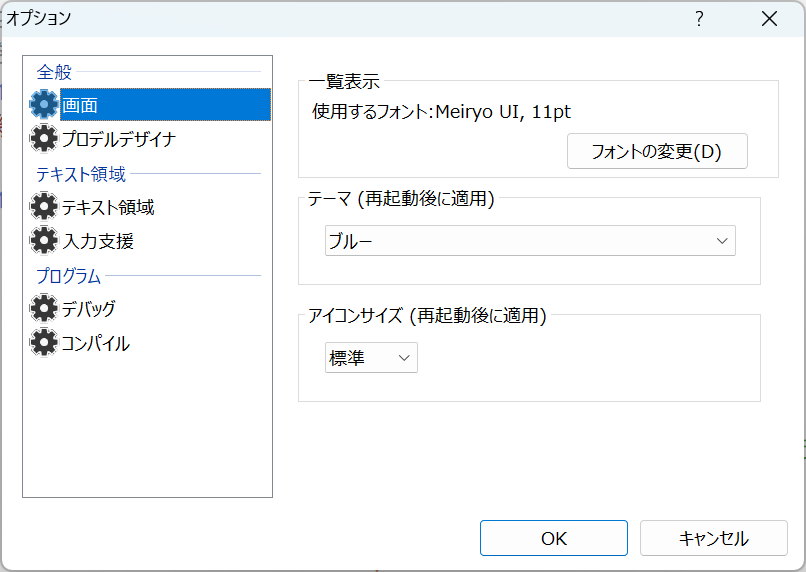
画面
| 一覧表示 | アウトラインやリストで表示するフォントや文字の大きさ |
|---|---|
| テーマ | プロデルデザイナの配色テーマ。明るい・ブルー・ダーク(暗い)から選択できます。 |
| アイコンサイズ | ツールバーやメニューのアイコンサイズ。小さい・標準・大きいから選択できます。「小さい」はDPI 100%の場合、標準と同じサイズです。 |
プロデルデザイナ
起動時
| 起動時に新規ファイルを作成する | プロデルデザイナを起動時に、あらかじめ新規ファイルを開くかどうか |
|---|---|
| 前回最後に開いたファイルを開く | プロデルデザイナを起動時に、前回プロデルデザイナを終了した際に開いたファイルを開きます。 |
関連付け
| [関連付けする]/[関連付けしない] | エクスプローラなどでプロデルファイル(*.rdr,*.プロデル;*.rdrproj)をダブルクリックした際に、プロデルデザイナを起動するかどうかを設定します。設定を反映させるには、プロデルデザイナを管理者権限で起動する必要があります。 |
|---|---|
| 最近利用したファイルの表示数 | 「ファイル」メニューの「最近使ったファイル」メニューに表示する開いたファイルの履歴数を設定します。 |
マニュアル
| マニュアルの表示先 | [F1]キーなどでマニュアルを開くときに、どの方法でマニュアルを表示するか選択します。 |
|---|---|
| HTMLヘルプ(オフライン)を使用する | オフライン用のHTMLヘルプを使用して表示します。インターネットに接続できない環境でも閲覧できます。全文検索機能は利用できません。 |
テキスト領域
プログラムを編集するためのテキストボックス(テキスト領域)についての設定を変更します。
| フォント | プログラムのフォントや文字の大きさ、色を変更します。 [フォントの変更]ボタンで、字体や文字の大きさを変更できます。 [既定]ボタンで、設定を初期状態に戻せます。 |
|---|---|
| プログラムに色を付ける | プログラムの構文に応じて、文字に色を付ける(ハイライト表示する)かどうかを設定します。 |
| 自動的に解析する | プログラム入力中に構文解析するかどうか |
| 行番号を表示する | テキスト領域の左側に行番号(ルーラ)を表示するかどうかを設定します。 |
| 選択した部分をマウスで移動できるようにする | 選択した部分のプログラムをドラッグ＆ドロップ操作で移動できるようにするかどうかを設定します。 |
| プログラム中のヒントを表示する | プログラムの字句にポイントした時にその字句の意味を表示するかどうか |
入力支援
入力補完機能で候補一覧を表示するタイミングなどを設定します。
| 入力補完を有効にする | 自動的に入力補完候補を表示するかどうか。 このチェックが解除されている場合でも、[Ctrl] + [スペース]で候補を表示できます。 |
|---|---|
| 補完候補の表示タイミング | 文字を入力中に、入力補完候補を表示するタイミング。 この設定は、IMEで文字を入力する際に適用されます。
|
| 一度に表示する候補数 | 補完候補リストに一画面に表示する最大候補数 |
| 記号文字 | 入力支援のメニュー/ショートカットキーで入力する時の記号を全角、半角のどちらで入力するか |
| コメント記号 | コメントとして使用する記号を選択します。 |
| 自動的にこのコメント記号に置き換える | 開いたプログラムのすべてのコメントについて、ここで設定した記号に置き換えるかどうか |
プログラム
デバッグ
| 既定エンコード | 新しくプログラムを保存する際の文字コードを選択します。 ただし、すでにあるファイルを開いた場合、その時の文字コードで保存されます。 |
|---|---|
| 実行時に別プロセスで実行する | ランタイム環境で実行する場合に、プロデルデザイナとは別のプロセスで実行します。 |
コンパイル
| 常に32ビット(WoW64)で起動する | 32ビットモードで起動する実行可能ファイルを作成します。チェックしない場合、64ビットWindowsでは64ビットモードで起動します。 |
|---|---|
| デバッグ情報(pdb)を出力する | コンパイル環境で実行可能ファイルを作成する際に、プログラムの変数名や行数などの対応情報を出力します。例外発生時などにより詳細な情報が必要な場合にチェックします。(プロデルデザイナの実行時には必ず生成されます) |
| 実行可能ファイルに必要なプラグインを同梱する | 実行可能ファイルの作成時に、関連するプロデルプラグインを実行可能ファイル内に同梱します。単一のexeファイルで配布する場合に便利です。一部外部のライブラリは同梱されません。 |
| プラグインを同じフォルダにコピーする | 実行可能ファイルの作成時に、関連するプロデルプラグインを同じフォルダにコピーします。複数の実行可能ファイルを作る場合に、合計のファイルサイズを節約できます。 |
スミレ
| コンパイラパス | スミレのコンパイラ(sumire.exe)のパスを指定します。スミレ環境でコンパイルする場合のみに必要です。 |
|---|
開発者キー
一部機能を実行可能ファイルとして作成する場合、不正ソフトウェアの開発を抑止するため開発者キーの登録(無料)が必要となります。
詳しくは開発者キーの登録と取得をご覧ください。